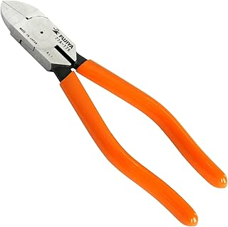
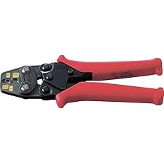
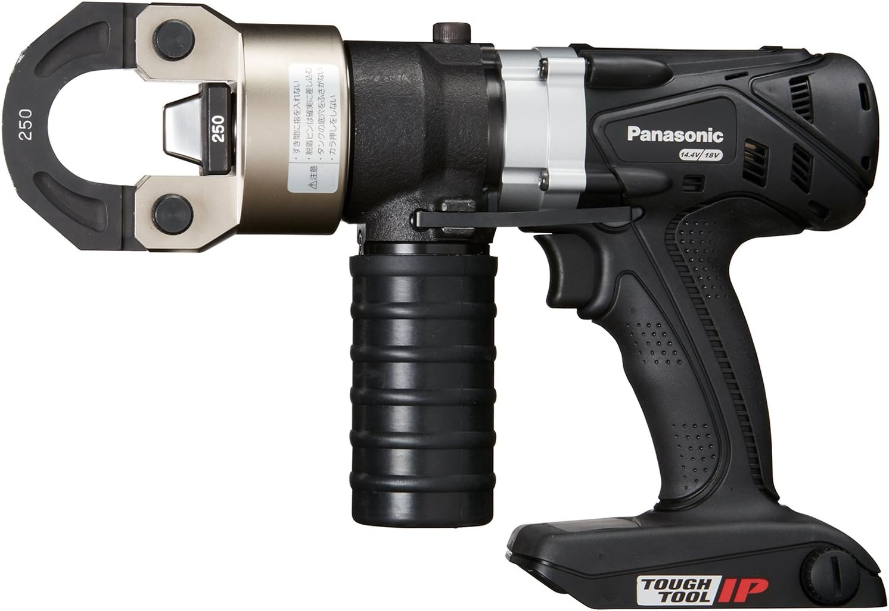
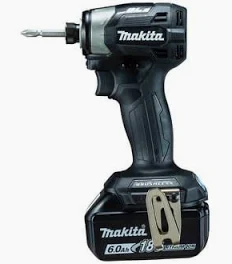
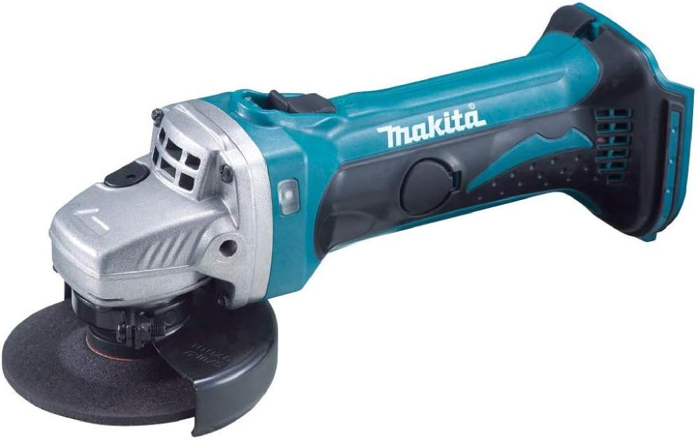
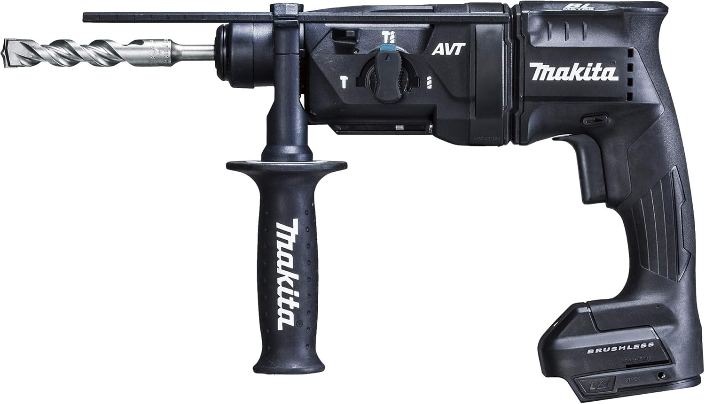
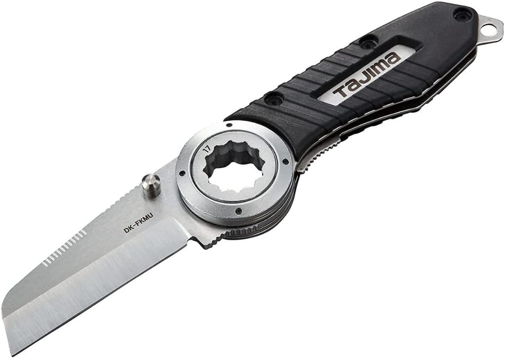
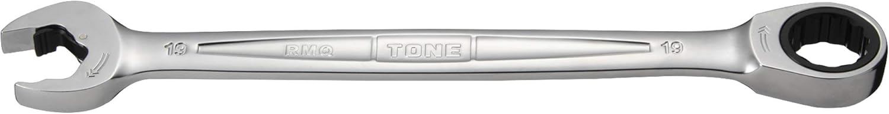
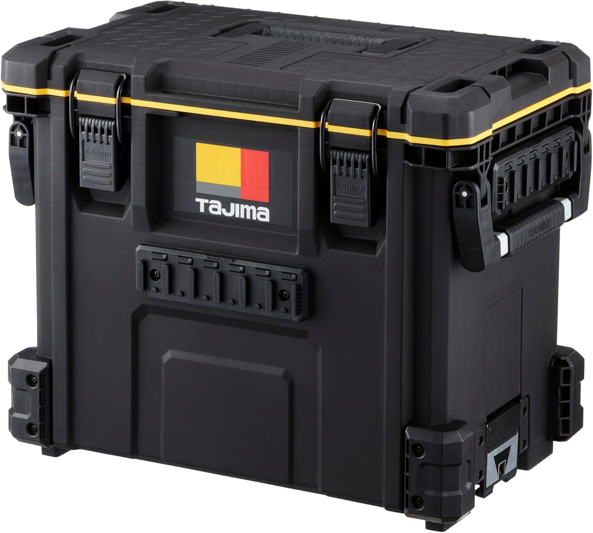
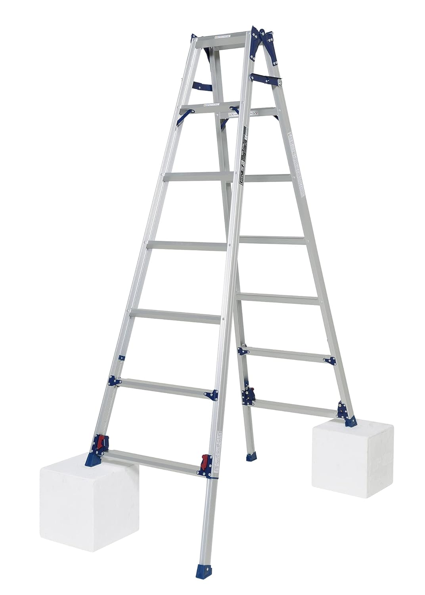

01 まず1本（出番最大の工程）
出番が最も多い工程から決めます。迷ったら「切る」工程のニッパーを先に見ると選びやすいです。
ニッパー、ストリッパー、圧着工具、ドライバー、テスター、メガー、充電工具、ケーブルカッター、通線工具、腰道具まで、 現場で出番のある物を中心にまとめています。
電気工事の現場でよく使う工具を、作業工程ごとに迷わず探せるように整理しています。
電気工事士が現場で使っている工具を、実体験ベースで整理した専門サイトとして、作業ごとに比較しやすくまとめています。
まずは「切る→剥く→圧着→確認」の工程から見て、必要に応じて使い方・コツ記事へ進めます。
これから工具をそろえたい人も、今使っている工具を見直したい人も、作業内容から探せるようにしています。
電気工事士が実際に現場で使っている工具をベースにまとめています。
カテゴリ名より先に、作業工程の優先順位で判断すると工具選定がぶれにくくなります。
出番が最も多い工程から決めます。迷ったら「切る」工程のニッパーを先に見ると選びやすいです。
次に「剥く」「圧着する」を追加します。配線ミスや端子不良を減らしやすい順で揃えるのが実務向きです。
対象線材、端子規格、測定要件を先に確認しておくと、買ってから合わない失敗を減らせます。
現場で出番の多い工具を、使い分けしやすいように作業工程別で整理しています。
実際に使っている感覚をベースにしているので、机上の比較だけになりにくいです。
似ている工具でも、どの作業で使いやすいかが分かるように整理しています。
まず何から見ればいいか迷わないように、出番の多いカテゴリを先に見つけやすくしています。
電気工事の基本作業は「切る・剥く・圧着する・確認する」です。ニッパー・ストリッパー・圧着工具・テスターを先に見ると、作業の流れごとに選びやすくなります。どこから見るか迷うときは、出番の多い「切る」から順にたどると判断しやすいです。


まずは基本工程（切る・剥く・圧着・確認）から見て、次に周辺作業へ進める並びにしています。スマホでもそのまま見やすいように整理しています。





















トップページでも、通線だけは見方が分かるように整理しておきました。
どの道具を使うか迷う時は、最初に親記事の「通線工具」から見ると判断しやすいです。 スチールワイヤー、ロッドタイプ、補助用品の違いを先に見ておくと選びやすいです。
通線工具の比較から見る通線系は「通線工具」→「配管入線のコツ」の順でも見やすいようにしています。読み終えたら気になる作業カテゴリに戻って比較しやすい流れです。
リミットスイッチの基本、接触して検知する考え方、PLC入力との関係、現場で見るポイント、近接センサとの違いを電気工事士向けにやさしく整理した記事です。
リミットスイッチの基本を記事で見る何でも1本で済ませようとすると、結局使いにくかったり失敗しやすくなります。 切る、剥く、圧着する、測る、通す、運ぶ、といった作業ごとに見るとかなり選びやすいです。
用途別で合う工具を探す※当サイトはAmazonアソシエイト・プログラムに参加しており、適格販売により収入を得ています。